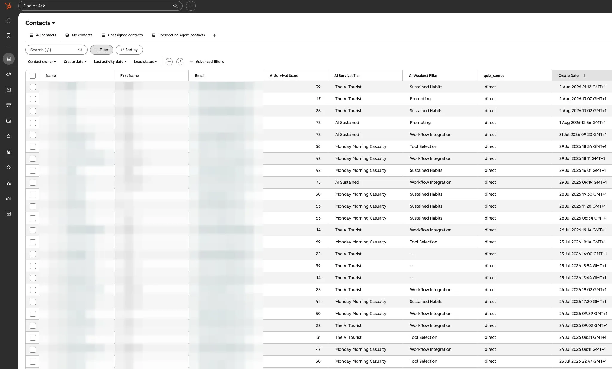

Screenshot. Paste. Build.
Fifty-five-plus people have taken the AI Survival Quiz and their results needed a proper home. So a complete HubSpot beginner built one: a live data warehouse that scores every new submission against the field and replies on its own, all by showing an AI his screen.
You've heard the line: AI can open doors that used to need training courses, certifications and someone expensive on a day rate. True, but nobody ever shows you a door actually opening. Here's one, hinges and all.
The AI Survival Quiz on this site asks twelve blunt questions and hands you a score out of 100. More than fifty-five people have taken it so far, and each one deserves the interesting answer: not just "you scored 61", but where that puts you against everyone else. To do that I needed every submission stored, structured and comparable. A small data warehouse, in other words. What I had was a website, no back end, and zero hours of HubSpot experience.
Fifty-five results, nowhere to look.
Honesty first: I've worked around CRM systems in my day job, so I knew the principles: contacts live in a database, forms feed it, workflows react to it. What I'd never done was open HubSpot. And the job I needed wasn't the standard beginner one anyway. I wasn't collecting business cards; I needed a results engine: every quiz answer captured as its own data point, every score stored, every new submission instantly ranked against the full field so a taker can see their league position.
The old options were a spreadsheet (fine at ten results, grim at sixty, hopeless at six hundred) or hiring a developer. The new option was asking an AI: "I have a quiz. People's results are piling up and I can't see them properly. What do I build?" The answer came back: a CRM can be your warehouse. Contact records for the people. Custom properties for every answer and score. Forms for capture. Workflows for the automatic replies. Then it walked me through building exactly that.
A CRM wearing a warehouse coat.
Here's the reframe that made everything click: a CRM is just a database with manners. Once quiz results were flowing in as structured data (one property per answer, per score, per verdict), the benchmarking question ("where does this person sit against the field?") became something the system answers itself, the moment a submission lands.

And once one form worked, the pattern was reusable everywhere. The property list and form count grew to cover every point where a reader can raise a hand on this site: the quiz itself, the subscribe box on the home page, the "send me the details" form on the learn page, the Reader Ledger's "file a receipt" form, and the live chat at the bottom of this very page. Five different doors, one database behind all of them. A reader who takes the quiz, subscribes, and files a receipt isn't three strangers in three tools. It's one person, one record, one story.
And the quiz isn't a one-off. It stays live, permanently, which quietly turns the warehouse into an analytics engine. Every new submission sharpens the benchmark and adds a data point to a growing record of how people's AI habits are changing. When that record says something worth printing, it gets published here first.
Add your data point.
Three minutes, twelve blunt questions. Your score lands in the same warehouse, ranked against everyone who came before you, and joins the running record of how AI habits are changing.
Get my scoreStop describing your screen to an AI. Screenshot it. Paste it. Ask "what do I click?"
Show it your screen.
Now the method, because this is the part you can steal. The biggest win in the whole build was embarrassingly simple: stop describing what you can see, and show it. Modern AI reads images. Every time HubSpot presented a screen full of unfamiliar menus, I took a screenshot, pasted it into the chat, and asked what to click. No more "I think I'm on the settings page?". The AI could see exactly what I saw, name the button, and warn me what would happen when I pressed it.
That one tactic collapsed the gap between beginner and operator. Errors got the same treatment: screenshot the red box, paste it, ask. Four habits carried the entire build:
1 · Describe the destination, not the tool
Say who you are, what's piling up, and what you want to exist. Never bluff expertise. The confession is what makes the help fit.
I run a quiz on my website. Over 55 people have taken it and I need every result stored, compared against all the others, and answered automatically. I've never used HubSpot and I'm not a developer. Talk to me like a beginner and tell me what to build.
2 · Paste the screenshot
The AI can't see your screen until you show it. A screenshot beats a paragraph of description every single time, and it works for errors too.
Here's a screenshot of exactly what I can see. [paste it] Where do I click next, and what will happen when I do?
3 · One step, then report back
Make it move one step at a time and confirm before the next. When something breaks, screenshot the error and send it back. Being stuck stops being terminal.
Give me one step at a time and wait for my confirmation. That last step didn't work. Here's the screenshot of the error. What do we try next?
4 · Test before trusting
The finish line isn't "it's built", it's "I watched it work". Make the machine design the test, then run the whole journey with your own email address.
Before this goes live: what could go wrong, how would I notice, and how do I test the full journey (form, record, score, reply) using my own email address?
I used Claude for this build. ChatGPT or Gemini would walk the same road. The screenshot tactic and the four habits are the point, not the model.
The time it gives back.
Run the maths on the manual alternative. Every submission, handled by hand, is real work: log the answers, calculate the score, work out where it sits against the field, write the reply. Call that ten minutes each, done honestly. Fifty-five-plus quiz results, plus subscribers, plus ledger receipts, plus chat. That's whole working days of admin that simply never happened, against a build that took a handful of spare evenings. And unlike most time savings, this one compounds: submission one hundred costs the same as submission ten. Nothing.
That's the real headline for anyone just starting out with AI, and for any business owner reading this with a form, a quiz, or a pile of enquiries of their own. The pipeline isn't a trick that needs feeding. It's infrastructure. You build it once, in plain English, with an AI reading your screenshots over your shoulder. Then it takes care of itself while you do the work only you can do.
The software you "can't use" will tell you how to use it, if you show it your screen.
Just ask.
One question, plain-English answer from a real person, usually within a day. Nothing is too small. And if you're a business sitting on your own pile of forms, enquiries or quiz results, this exact pipeline is a conversation I'm happy to have.